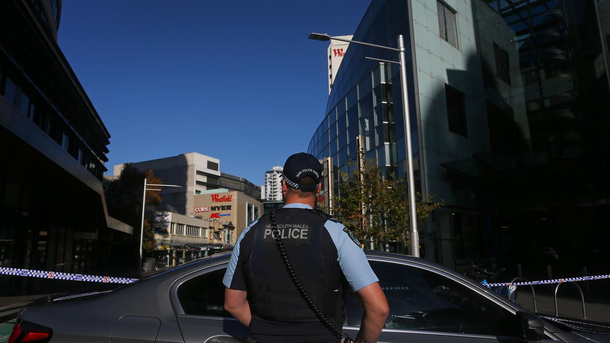
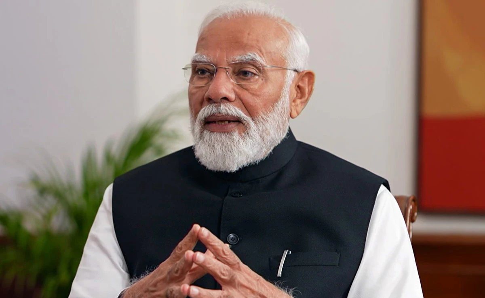

Sydney church stabbing: Several people including bishop injured; one
arrested
A number of people were injured in a stabbing at a church in
Walkley, about 30 km (18 miles) west of the Sydney central business
district, police authorities said on April 15. Officers arrested a
male and he is assisting police with inquiries, a police statement
said. The injured people suffered non-life threatening injuries and
are being treated by paramedics, police said. A number of people
were injured in a stabbing at a church in Walkley, about 30 km (18
miles) west of the Sydney central business district, police
authorities said on April 15. Officers arrested a male and he is
assisting police with inquiries...

(Left-right) Its the second stabbing incident in Sydney after six
people were killed in a knife attack at a mall in Sydney’s Bondi
area on Saturday. File. | Photo Credit: Getty Images
Politics
Centre officially implements Citizenship Amendment Act, 2019,
notifies rules
The Central government has officially notified the rules of the
Citizenship (Amendment) Act, 2019 (CAA), following Union Home
Minister Amit Shah's announcement of its implementation before the
Lok Sabha elections. This law facilitates Indian citizenship for
non-Muslim migrants from Bangladesh, Pakistan, and Afghanistan who
arrived before December 31, 2014. The CAA targets minorities
including Hindus, Sikhs, Christians, Buddhists, Jains, and Parsis
facing persecution in Muslim-majority countries. The 2019 amendment
expedites citizenship for migrants facing religious persecution and
reduces the residency requirement from twelve to six years. An
Intelligence Bureau report estimates over 30,000 immediate
beneficiaries once the rules are enacted. The CAA, passed by
Parliament on December 11, 2019, was officially notified on December
12 of the same year after over four years of amendment. The Home
Ministry reported granting Indian citizenship to 1,414 non-Muslim
minority migrants from Pakistan, Bangladesh, and Afghanistan from
April 1 to December 31, 2021.
Technology
Apple loses top phonemaker spot to Samsung as iPhone shipments drop,
IDC says
Global smartphone shipments increased 7.8% to 289.4 million units
during January-March, with Samsung (005930.KS), opens new tab, at
20.8% market share, clinching the top phonemaker spot from Apple.
The iPhone-maker's steep sales decline comes after its strong
performance in the December quarter when it overtook Samsung as the
world's No.1 phone maker. It's back to the second spot, with 17.3%
market share, as Chinese brands such as Huawei gain market share.
Xiaomi, one of China's top smartphone makers, occupied the third
position with a market share of 14.1% during the first quarter.
South Korea's Samsung, which launched its latest flagship smartphone
lineup - Galaxy S24 series - in the beginning of the year, shipped
more than 60 million phones during the period. Global sales of
Galaxy S24 smartphones jumped 8%, compared to last year's Galaxy S23
series during their first three weeks of availability, data provider
Counterpoint previously said. In the first quarter, Apple shipped
50.1 million iPhones, down from 55.4 million units it shipped same
period last year, according to IDC. Apple's smartphone shipments in
China shrank 2.1% in the final quarter of 2023 from a year earlier.
Entertainment
Firing outside Salman Khan's home: 'Gurugram-based gangster Vishal
Rahul aka Kalu carried out the attack', say reports
Major update in the firing incident outside Salman Khan's Mumbai
residence. According to reports, one of the shooters has been
identified. Vishal Rahul is a wanted gangster from Gurugram and is
known to be associated with Rohit Godara, who is linked to the
Lawrence Bishnoi gang. Bishnoi is currently in Tihar Jail for his
involvement in several high-profile murder cases including that of
musician Sidhu Moose Wala and Rajput leader and Karni Sena chief
Sukhdev Singh Gogamedi. This revelation has heightened fears and
raised questions about the extent of organised crime networks
operating in the region. Reports reveal that Vishal, also known as
Kalu, has been implicated in several heinous crimes, including
multiple killings and robberies in Haryana. Recently, he was
allegedly involved in the murder of a bookie in Rohtak, purportedly
on the instructions of Lawrence Bishnoi. Furthermore, a chilling
Facebook post attributed to Anmol Bishnoi, Lawrence Bishnoi's
younger brother, has surfaced, claiming responsibility for the
shooting and issuing a warning to Salman Khan.
Vote for NDA to put end to goonda raj, dynasty politics in Bihar:
Yogi Adityanath
Aurangabad/Nawada, Uttar Pradesh Chief Minister Yogi Adityanath on
Monday urged people in Bihar to vote for the NDA to put an end to
“goonda raj” and “dynasty politics” in the state.
Supreme Court seeks report on Muzaffarnagar child slapping case
from UP govt
New Delhi: The Supreme Court on Monday asked the Uttar
Pradesh government to report within a fortnight about the progress
of the case involving a Muslim student who was slapped by
classmates on the instruction of his teacher at a school in
Muzaffarnagar.
Govt’s priority to restore peace in Manipur keeping the state
united: Amit Shah
Amit Shah also reiterated the Centre’s resolve to seal border with
Myanmar to prevent illegal infiltration and scrapping of the free
movement regime Union home minister Amit Shah on Monday said that
the priority of the next government under Prime Minister Narendra
Modi would be to restore peace in strife-torn Manipur by talking to
all sides and keeping the state united. Addressing an election
meeting in Imphal, he also reiterated the Centre’s resolve to seal
border with Myanmar to prevent illegal infiltration and scrapping of
the free movement regime (FMR). “I want to tell people residing in
the (Imphal) valley and hills of Manipur that in the coming days
Narendra Modi’s priority is to bring peace to the state by talking
to all sides and keeping the state united,” Shah said.
2 killed, 17 injured after building collapses in UP's
Muzaffarnagar
The incident occurred in Talda village of Jansath town in
Muzaffarnagar when several labourers worked inside the building.
Two labourers were killed, and 17 others injured after the roof of
an under-construction building collapsed
MVA could win 60-70 per cent of total seats in Maharashtra in Lok
Sabha polls: Sharad Pawar
Satara, NCP leader Sharad Pawar on Monday said Maha Vikas Aghadi
could win 60 to 70 per cent of the total seats in Maharashtra in
the upcoming Lok Sabha elections.
World
Antarctic sea ice hits lowest winter maximum on record: US data
As the southern hemisphere transitions into spring, the US
National Snow and Ice Data Center (NSIDC) said in a statement that
Antarctic sea ice had only reached a maximum size of 16.96 million
square kilometers (6.55 million square miles) this year, on
September 10.
China denies reports it obstructed G20 climate discussions
Reports that China obstructed discussions on tackling climate
change at Group of 20 (G20) meetings last week in India are
"completely inconsistent with the facts", China's foreign ministry
said on Wednesday.
Opinion | Sunak To Biden, No Incumbent Has It Easy This Year -
Thanks To Economy
The year 2024 is a big one for elections- given the sheer number of
polls happening across the world. "Globally, more voters than ever
in history will head to the polls as at least 64 countries (plus the
European Union) - representing a combined population of about 49% of
the people in the world - are meant to hold national elections, the
results of which, for many, will prove consequential for years to
come," the Time magazine said in an article in December last year.
Well, a few of those elections are done already - Bangladesh,
Pakistan, Taiwan and Russia, to name a few. And some have thrown up
surprises - who would have thought that in Pakistan, members of
former Prime Minister Imran Khan's Pakistan Tehreek-e-Insaf party,
who fought as independents (after a military crackdown on the
party), would, defying all odds, win more seats than the Pakistan
People's Party and the Pakistan Muslim League-Nawaz?
Cough syrup deaths overseas prompts US crackdown on toxic testing
The Food and Drug Administration has reprimanded at least 28
companies this year, saying they failed to prove sufficient
testing of ingredients used in over-the-counter drugs and consumer
products for the toxins ethylene glycol (EG) and diethylene glycol
(DEG), according to a Reuters analysis of agency import alerts and
warning letters to manufacturers.
Philippines removes Chinese barrier at disputed shoal in 'special
operation'
The Philippines expressed outrage on Sunday and shared images of
Chinese coastguard policing a long, ball-buoy barrier near the
Scarborough Shoal, a rocky outcrop 200 km from the Philippines and
the site of years of intermittent flare-ups over sovereignty and
fishing rights.
Politics
KPK, AGO dig up old graft cases ahead of 2024 elections
A Law enforcement institutions, especially the Corruption
Eradication Commission (KPK) and the Attorney General’s Office
(AGO), have recently launched investigations into graft cases
dating back years, raising speculation that such moves are
politically driven ahead of the 2024 elections.
Ganjar-Prabowo pairing possible, says Puan
Puan Maharani of the indian Democratic Party of Struggle (PDI-P)
central executive board said on Thursday that it was “a
possibility” for presumptive nominee Ganjar Pranowo to be paired
with Gerindra Party chairman Prabowo Subianto for next year's
presidential election.

"Everyone Will Regret": PM Modi On Scrapping Of Electoral Bonds
Scheme
New Delhi: The scrapping of the electoral bonds - in a
landmark decision by the Supreme Court in February - is a decision
"everyone will regret when there is honest reflection" and has
"completely pushed the country towards black money", Prime Minister
Narendra Modi told news agency ANI Monday. The Prime Minister said
the electoral bonds scheme launched by his government was meant to
fight the use of 'black money', referring to unaccounted cash or
funds from criminal activities, in election campaigns, and that he
had "never claimed this was an absolute way" to achieve that goal.
Mr Modi also attacked the opposition for spreading "lies" about the
bonds and said his government had introduced the scheme to cut down
on 'black money' during elections. He countered criticism - that his
Bharatiya Janata Party was the largest beneficiary, to the tune of
thousands of crores.
Ridwan Kamil, AHY taken off Ganjar's VP list: Puan
Puan Maharani, who is also the daughter of party matriarch
Megawati Soekanoputri, said that the PDI-P would not pick a
vice-presidential candidate from any political party that is not a
member of its coalition.
Jokowi denies Prabowo resorted to violence in cabinet meeting
Unconfirmed rumors have been circulating on social media in recent
days that Defense Minister Prabowo Subianto resorted to strangling
and slapping Deputy Agriculture Minister Harvick Hasnul Qolbi
before the limited cabinet meeting at the Presidential Palace
started.
Business
Govt to keep an eye on oil prices, projected to surge to $100 by
year-end
The government will keep a watchful eye on crude oil prices, which
are expected to surge by the end of this year. The Finance
Ministry says it is prepared to carry out stress testing if needed
to anticipate any impact on the state budget, particularly energy
subsidies.
BI sticks with inflation forecast despite high rice, oil prices
The central bank has a mandate to keep annual consumer price index
(CPI) growth in the range of 2 to 4 percent this year. It
estimates that the rate will fall right between those bounds at 3
percent at the end of this year, and that it will drop slightly to
2.8 percent in 2024.
Tesla to layoff more than 10% of its staff
Tesla will lay off more than 10% of its workforce, tech publication
Electrek reported on Monday, citing an internal memo, as the top
auto-maker struggles with soft demand for its electric vehicles in a
highly competitive market. Over the last few months, Tesla asked
managers to identify critical team members, paused some stock
rewards and canceled some employees’ annual reviews, according to
the report. The world’s largest automaker by market value had
140,473 employees globally as of December 2023, according to its
latest annual report. The reported cuts will affect about 15,000
workers. Tesla had previously laid off 4% of its workforce in New
York in February last year as part of a performance review cycle and
before a union campaign was to be launched by its employees.
Asian markets sink, dollar gains as Fed hints at further rate hike
Asian stocks sank Thursday and the dollar advanced after the
Federal Reserve indicated it could hike interest rates again this
year and keep them elevated longer than feared as it struggles to
bring inflation to heel.
Stocks struggle as oil surge sets stage for hawkish Fed
Brent crude futures eased from 10-month highs overnight but at
$94.26 a barrel are up 30 percent in three months thanks to Saudi
Arabia and Russia vowing to extend output cuts.
Technology
Governments race to regulate AI tools
Rapid advances in artificial intelligence (AI) such as
Microsoft-backed OpenAI's ChatGPT are complicating governments'
efforts to agree laws governing the use of the technology.
When Facebook blocks news, studies show the political risks that
follow
Since Meta blocked links to news in Canada last August to avoid
paying fees to media companies, right-wing meme producer Jeff
Ballingall says he has seen a surge in clicks for his Canada Proud
Facebook page. “Our numbers are growing and we’re reaching more
and more people every day,” said Ballingall, who publishes up to
10 posts a day and has some 540,000 followers. “Media is just
going to get more tribal and more niche,” he added. “This is just
igniting it further.”
Apple CEO Tim Cook arrives in Vietnam to meet users, boost supplier
ties
Apple CEO Tim Cook arrived in Hanoi on Monday, starting a two-day
visit to Vietnam, a key manufacturing hub for the iPhone maker,
during which he is expected to meet students and content creators,
state media said. Cook will also meet users of Apple products to
better understand how they are employed, online newspaper VietnamNet
said. Apple would boost its connection with local suppliers, clean
water projects and education opportunities, it quoted Cook as saying
on arrival. Last week, more than 60 human and environmental rights
bodies pressed Apple in a letter to take action on Vietnam’s
detention of climate experts, with activist organisations urging it
to weigh in on the matter, given its manufacturing links.
US takes on Google in landmark antitrust trial
Google begins a marathon battle in a federal court on Tuesday to
fight accusations from the US government that it acted unlawfully
to become the world's preeminent search engine.
Chinese firm hacked Indian immigration data: Post
India is one of the targets of China’s intelligence and
cyber-surveillance and Beijing’s hackers appeared to have
successfully breached 95.2 gigabytes of immigration data from the
Indian government, an investigation by The Washington Post has
revealed. The Post, in a report published Thursday, said that a
trove of leaked documents from a “Chinese state-linked hacking
group shows that Beijing’s intelligence and military groups are
carrying out large-scale, systematic cyber intrusions against
foreign governments
Entertainment
Jimmy Fallon accused of creating 'toxic' workplace
Jimmy Fallon, host of NBC's flagship "Tonight Show," has
apologized to staff after employees accused him of creating a
"toxic workplace," according to a report in Rolling Stone
magazine.
Vetrimaaran confirms Suriya-starrer Vaadivaasal is not shelved'
In 2022, it was announced that director Vetrimaaran and actor
Suriya are coming together for a film titled Vaadivasal. The
announcement was welcomed by Suriya fans as it marks the star’s
first collaboration with the acclaimed director. A concept poster
of the film was released which featured an ancient coin with a
bull. A promo of Suriya training for jallikattu (a traditional
bull-taming game in Tamil Nadu) went viral. However, after such
initial teasers, the film failed to progress, much to the
disappointment of fans, who were further discouraged by rumours
that the film is shelved. Now, Vetrimaaran has put an end to all
such speculations and has confirmed that Vaadivasal is very much
on the cards.
Bade Miyan Chote Miyan box office collection day 4: Akshay
Kumar-Tiger Shroff’s film trails behind OMG 2, fails to cross Rs 50
cr mark despite BOGO push
Akshay Kumar and Tiger Shroff’s latest film, Bade Miyan Chote Miyan,
continues to maintain its stride at the box office after
encountering a sharp decline on its second day of release. As per
industry tracker Sacnilk, the movie amassed Rs 9 crore on Sunday,
bringing its total domestic earnings to Rs 40.75 crore. Made at a
reported budget of Rs 350 crore, the film’s makers had also
introduced a buy-one-get-one offer on Sunday. Bade Miyan Chote
Miyan’s worldwide collection stands at Rs 95.18 crore. The film made
its debut at the box office on Thursday, coinciding with Eid
festivities, and garnered Rs 15.65 crore in its opening. However, it
experienced a setback in box office figures on the subsequent day,
witnessing a 51 percent drop and earning Rs 7.6 crore on Friday.
Despite a slight weekend surge, the collection remained in the
single-digit range, with Rs 8.5 crore on Friday and Rs 9 crore on
Sunday. For both Akshay and Tiger, Bade Miyan Chote Miyan holds
significance as they strive to shake off the streak of unsuccessful
films. Following a series of flops like Samrat Prithviraj, Raksha
Bandhan and Cuttputlli, Akshay found success with OMG 2. However,
Bade Miyan Chote Miyan has yet to surpass or match the box office
performance of OMG 2, which amassed Rs 55.17 crore within the same
timeframe.
Tony Leung scores a first with ‘Golden Lion’ film honor
Hong Kong actor Tony Leung Chiu-wai has won the esteemed “Golden
Lion for Lifetime Achievement” award at the 80th Venice Film
Festival, becoming the first Chinese actor to have ever received
the prestigious accolade.
Randeep Hooda ‘thanks’ unidentified men who shot Sarabjit Singh’s
killer: ‘Karma does catch up’
Following the death of Amir Sarfaraz — a key figure in Sarabjit
Singh’s murder in Lahore’s Kot Lakhpat Jail in 2013 — who was
reportedly assassinated in Lahore, actor Randeep Hooda, ‘thanked’
unnamed individuals responsible for shooting Amir. Randeep, who
was recently seen in Swatantra Veer Savarkar, played Sarabjit in
Omung Kumar-helmed biopic, Sarbjit in 2016. The biopic also stars
Aishwarya Rai Bachchan, Richa Chadha and Darshan Kumar. Reacting
to the news of Amir also known as Tamba — a notorious underworld
figure from Pakistan — being shot, Randeep, took to X (formerly
Twitter), and wrote, “KARMA. Thank you unknown men (sic)” with
folded hands emoji.